Learning Module 10 Interest Rate Risk and Return - Part 1: Introduction
Volume 6: Fixed Income
Learning Module 10 Interest Rate Risk and Return
Part 1/2: Introduction (PDF Pages 249–264)
Tập 6: Thu nhập Cố định (Fixed Income)
Học phần 10: Rủi ro Lãi suất và Tỷ suất Sinh lợi (Interest Rate Risk and Return)
Phần 1/2: Giới thiệu (Trang PDF 249–264)
L E A R N I N G M O D U L E 10
H Ọ C P H Ầ N 10
Interest Rate Risk and Return
Rủi ro Lãi suất và Tỷ suất Sinh lợi (Interest Rate Risk and Return)
LEARNING OUTCOMES
MỤC TIÊU HỌC TẬP (LEARNING OUTCOMES)
Mastery The candidate should be able to: calculate and interpret the sources of return from investing in a fixed-rate bond; describe the relationships among a bond’s holding period return, its Macaulay duration, and the investment horizon; define, calculate, and interpret Macaulay duration.
| Mức độ thành thạo | Ứng viên cần có khả năng: |
|---|---|
| tính toán và diễn giải các nguồn tỷ suất sinh lợi (sources of return) từ việc đầu tư vào một trái phiếu lãi suất cố định (fixed-rate bond); | |
| mô tả mối quan hệ giữa tỷ suất sinh lợi thời kỳ nắm giữ của một trái phiếu (holding period return), thời lượng Macaulay (Macaulay duration) của nó, và thời hạn đầu tư (investment horizon); | |
| định nghĩa, tính toán và diễn giải thời lượng Macaulay (Macaulay duration). |
INTRODUCTION
GIỚI THIỆU (INTRODUCTION)
1
1
Prior lessons on yield measures established that a fixed-income investor’s rate of return will equal a bond’s yield-to-maturity (YTM) under certain assumptions. In these lessons, we explore the sources of return for fixed-income investments and demonstrate investment returns in different scenarios, including the one embedded in the YTM calculations. Prior lessons also established interest rate risk. We show how investment horizon, in relation to a bond’s features, is a key determinant of interest rate risk for investors and how different investors in the same fixed-income investment can have different returns and views on risk. Finally, we introduce Macaulay duration, a weighted-average measure of the time to receipt for a bond’s cash flows, and demonstrate how holding a bond for its Macaulay duration balances reinvestment and price risks.
Các bài học trước về các thước đo lợi suất đã xác lập rằng tỷ suất sinh lợi của một nhà đầu tư thu nhập cố định sẽ bằng với lợi suất đáo hạn (yield-to-maturity – YTM) của trái phiếu dưới một số giả định nhất định. Trong các bài học này, chúng ta sẽ khám phá các nguồn tỷ suất sinh lợi đối với các khoản đầu tư thu nhập cố định và minh họa tỷ suất sinh lợi đầu tư trong các kịch bản khác nhau, bao gồm cả kịch bản được hàm chứa trong các phép tính YTM. Các bài học trước cũng đã xác lập rủi ro lãi suất (interest rate risk). Chúng tôi sẽ chỉ ra cách thời hạn đầu tư (investment horizon), trong mối tương quan với các đặc điểm của trái phiếu, là một yếu tố quyết định chính đối với rủi ro lãi suất của các nhà đầu tư và cách các nhà đầu tư khác nhau trong cùng một khoản đầu tư thu nhập cố định có thể có tỷ suất sinh lợi và quan điểm về rủi ro khác nhau. Cuối cùng, chúng tôi giới thiệu thời lượng Macaulay (Macaulay duration), một thước đo trung bình có trọng số của thời gian cho đến khi nhận được các dòng tiền của trái phiếu, và chứng minh cách thức nắm giữ một trái phiếu trong khoảng thời gian bằng thời lượng Macaulay của nó giúp cân bằng giữa rủi ro tái đầu tư (reinvestment risk) và rủi ro giá (price risk).
LEARNING MODULE OVERVIEW
TỔNG QUAN HỌC PHẦN (LEARNING MODULE OVERVIEW)
-
There are three sources of return for fixed-rate bond investors: (1) coupon and principal payments, (2) reinvestment of coupons, and (3) gain or loss on the sale of the bond if the bond is sold prior to maturity.
-
The rate of return on a fixed-rate bond investment is found by using the holding period, the future value of coupons received, the sale price, and the purchase price to calculate a compounded, annualized rate of return.
-
Có ba nguồn tỷ suất sinh lợi đối với các nhà đầu tư trái phiếu lãi suất cố định: (1) các khoản thanh toán coupon và tiền gốc, (2) tái đầu tư các khoản coupon, và (3) lãi hoặc lỗ khi bán trái phiếu nếu trái phiếu được bán trước khi đáo hạn.
-
Tỷ suất sinh lợi trên một khoản đầu tư trái phiếu lãi suất cố định được tìm bằng cách sử dụng thời kỳ nắm giữ (holding period), giá trị tương lai của các khoản coupon nhận được, giá bán, và giá mua để tính tỷ suất sinh lợi chuẩn hóa theo năm có ghép lãi (compounded, annualized rate of return).
-
If all cash flows are received at scheduled dates, coupons are reinvested at the same rate as a bond’s YTM, and the bond is held to maturity, an investor’s annualized compounded rate of return will equal the bond’s YTM. If any of those assumptions do not hold, the investor’s rate of return will vary.
-
Reinvestment risk and price risk are types of interest rate risk and have an inverse relationship. Reinvestment risk is the risk of decreasing reinvestment returns on cash flows, which occurs when interest rates fall. Price risk refers to declining prices and occurs when interest rates rise.
-
The longer the investment horizon, the more important reinvestment risk is relative to price risk. If an investor’s investment horizon equals the Macaulay duration of a bond, the risks equally offset each other.
-
Macaulay duration is the weighted-average time to receipt of a bond’s cash flows, where the weights of each cash flow in the calculation are each cash flow’s share of the bond’s full price (i.e., present value).
-
When the investment horizon is greater than (less than, equal to) a bond’s Macaulay duration, coupon reinvestment risk is higher than (lower than, equal to) the bond’s price risk.
-
Nếu tất cả các dòng tiền đều nhận được vào các ngày theo lịch trình, các khoản coupon được tái đầu tư ở cùng mức lãi suất với YTM của trái phiếu, và trái phiếu được nắm giữ cho đến khi đáo hạn, thì tỷ suất sinh lợi chuẩn hóa theo năm có ghép lãi của nhà đầu tư sẽ bằng với YTM của trái phiếu. Nếu bất kỳ giả định nào trong số đó không được giữ vững, tỷ suất sinh lợi của nhà đầu tư sẽ thay đổi.
-
Rủi ro tái đầu tư (reinvestment risk) và rủi ro giá (price risk) là các loại rủi ro lãi suất và có mối quan hệ ngược chiều nhau. Rủi ro tái đầu tư là rủi ro giảm tỷ suất sinh lợi tái đầu tư trên các dòng tiền, xảy ra khi lãi suất giảm. Rủi ro giá đề cập đến việc giá sụt giảm và xảy ra khi lãi suất tăng.
-
Thời hạn đầu tư (investment horizon) càng dài, rủi ro tái đầu tư càng quan trọng hơn so với rủi ro giá. Nếu thời hạn đầu tư của một nhà đầu tư bằng với thời lượng Macaulay (Macaulay duration) của một trái phiếu, hai loại rủi ro này sẽ bù trừ tương đương cho nhau.
-
Thời lượng Macaulay (Macaulay duration) là thời gian trung bình có trọng số cho đến khi nhận được các dòng tiền của trái phiếu, trong đó trọng số của mỗi dòng tiền trong phép tính là tỷ trọng của mỗi dòng tiền trong giá toàn phần (full price – tức là giá trị hiện tại) của trái phiếu.
-
Khi thời hạn đầu tư lớn hơn (nhỏ hơn, bằng) thời lượng Macaulay của một trái phiếu, rủi ro tái đầu tư coupon sẽ cao hơn (thấp hơn, bằng) rủi ro giá của trái phiếu đó.
LEARNING MODULE SELF-ASSESSMENT
TỰ ĐÁNH GIÁ HỌC PHẦN (LEARNING MODULE SELF-ASSESSMENT)
These initial questions are intended to help you gauge your current level of understanding of the learning module.
Các câu hỏi ban đầu này nhằm giúp bạn tự đánh giá mức độ hiểu biết hiện tại của mình về học phần này.
- A source of risk for a buy-and-hold fixed-income investor, ignoring credit risk, is from:
-
A. capital gain/loss on sale only.
-
B. coupon reinvestment only.
-
C. neither capital gain/loss on sale nor coupon reinvestment.
-
Solution:
- Một nguồn rủi ro đối với một nhà đầu tư thu nhập cố định theo chiến lược mua và nắm giữ (buy-and-hold), bỏ qua rủi ro tín dụng, xuất phát từ:
-
A. chỉ lãi/lỗ vốn (capital gain/loss) khi bán.
-
B. chỉ việc tái đầu tư coupon (coupon reinvestment).
-
C. không phải từ lãi/lỗ vốn khi bán cũng không phải từ việc tái đầu tư coupon.
-
Lời giải:
B is correct. Changes in interest rates during the holding period of the bond will impact returns from reinvestment of coupons.
A is incorrect because for a buy-and-hold investor, there is no risk of capital gain or loss since the investor is not selling the bond prior to maturity and will get the par value of the bond at the maturity date.
B là đáp án đúng. Những thay đổi về lãi suất trong thời kỳ nắm giữ trái phiếu sẽ tác động đến tỷ suất sinh lợi từ việc tái đầu tư các khoản coupon.
C is incorrect because a buy-and-hold investor’s returns are impacted by the rate earned on the reinvestment of coupons, or reinvestment risk.
A không đúng bởi vì đối với một nhà đầu tư mua và nắm giữ, không có rủi ro lãi hoặc lỗ vốn vì nhà đầu tư không bán trái phiếu trước khi đáo hạn và sẽ nhận được mệnh giá của trái phiếu vào ngày đáo hạn.
- A family office purchases a six-year, 5.8% annual coupon eurobond priced at par for settlement on 15 December 2031. The bond matures on 15 December 2037. Immediately after the purchase of the bond, interest rates rise to 6.5%. The family office sells the bond after three years. The family office’s total annualized return on the investment was closest to:
- A. 5.28%.
C không đúng bởi vì tỷ suất sinh lợi của nhà đầu tư mua và nắm giữ chịu tác động bởi mức lãi suất kiếm được từ việc tái đầu tư các khoản coupon, hay rủi ro tái đầu tư.
B. 5.80%.
- Một văn phòng quản lý gia sản (family office) mua một trái phiếu eurobond kỳ hạn 6 năm, trả coupon hàng năm 5,8% được định giá ngang mệnh giá để thanh toán vào ngày 15 tháng 12 năm 2031. Trái phiếu đáo hạn vào ngày 15 tháng 12 năm 2037. Ngay sau khi mua trái phiếu, lãi suất tăng lên 6,5%. Văn phòng quản lý gia sản bán trái phiếu sau 3 năm. Tổng tỷ suất sinh lợi chuẩn hóa theo năm của văn phòng quản lý gia sản trên khoản đầu tư này gần nhất với mức:
-
A. 5,28%.
-
B. 5,80%.
C. 6.50%. Solution: A is correct. The total annualized return is composed of the (1) coupon payments, (2) reinvestment of coupons, and (3) gain/loss on the sale. This is equal to 5.28%, as shown below. The future value of the coupons including reinvestment is = – FV (0.065, 3, 5.8, 0, 0) = 18.556. The sale price of the bond after three years is = – PV (0.065, 3, 5.8, 100, 0) = 98.146. The realized return, r , is1 T − 1. r = (FV PV)1 ____________ 3 − 1. _r = (18.556 + 98.146 100 ) r = 0.0528 = 5.28% B is incorrect because it would be the return if interest rates remained at 5.8%. C is incorrect because 6.5% is the interest rate at which the coupons will be reinvested, not the rate of return for the family office on the investment. 3. The risk to an investor who buys a bond at par value and intends to sell it before the receipt of the first coupon payment, ignoring credit risk, is most likely from: A. price risk. B. reinvestment risk. C. neither price risk nor reinvestment risk. Solution: A is correct. Changes in interest rates can affect the price of the bond and, therefore, the returns for the investor. B is incorrect because if the investor intends to sell the bond before the receipt of the first coupon, then reinvestment risk is irrelevant because no coupons will be reinvested. C is incorrect because the investor faces price risk. 4. Reinvestment risk and price risk of a bond offset one another if an investor’s investment horizon is: A. equal to the bond’s time-to-maturity. B. equal to the bond’s Macaulay duration. C. less than the bond’s Macaulay duration. Solution: B is correct. When the investment horizon is equal to the Macaulay duration, the gain (loss) from coupon reinvestment is offset by the loss (gain) in the price of the bond from changes in interest rates.
- C. 6,50%.
Lời giải:
A là đáp án đúng. Tổng tỷ suất sinh lợi chuẩn hóa theo năm bao gồm (1) các khoản thanh toán coupon, (2) tái đầu tư các khoản coupon, và (3) lãi/lỗ khi bán. Con số này bằng 5,28%, như được trình bày dưới đây.
Giá trị tương lai của các khoản coupon bao gồm cả tái đầu tư là:
= -FV(0.065, 3, 5.8, 0, 0) = 18.556.
Giá bán của trái phiếu sau 3 năm là:
= -PV(0.065, 3, 5.8, 100, 0) = 98.146.
Tỷ suất sinh lợi thực hiện (realized return), $r$, là:
B không đúng bởi vì đó sẽ là tỷ suất sinh lợi nếu lãi suất vẫn giữ ở mức 5,8%.
C không đúng bởi vì 6,5% là mức lãi suất mà tại đó các khoản coupon sẽ được tái đầu tư, chứ không phải tỷ suất sinh lợi của văn phòng quản lý gia sản trên khoản đầu tư.
- Rủi ro đối với một nhà đầu tư mua một trái phiếu ngang mệnh giá và dự định bán nó trước khi nhận được khoản thanh toán coupon đầu tiên, bỏ qua rủi ro tín dụng, nhiều khả năng nhất xuất phát từ:
- A. rủi ro giá (price risk).
- B. rủi ro tái đầu tư (reinvestment risk).
- C. không phải rủi ro giá cũng không phải rủi ro tái đầu tư.
Lời giải:
A là đáp án đúng. Những thay đổi về lãi suất có thể ảnh hưởng đến giá của trái phiếu và do đó ảnh hưởng đến tỷ suất sinh lợi của nhà đầu tư.
B không đúng bởi vì nếu nhà đầu tư dự định bán trái phiếu trước khi nhận được khoản coupon đầu tiên, thì rủi ro tái đầu tư không liên quan bởi vì sẽ không có khoản coupon nào được tái đầu tư.
C không đúng bởi vì nhà đầu tư phải đối mặt với rủi ro giá.
- Rủi ro tái đầu tư và rủi ro giá của một trái phiếu bù trừ lẫn nhau nếu thời hạn đầu tư (investment horizon) của nhà đầu tư:
- A. bằng với thời gian đáo hạn (time-to-maturity) của trái phiếu.
- B. bằng với thời lượng Macaulay (Macaulay duration) của trái phiếu.
- C. nhỏ hơn thời lượng Macaulay của trái phiếu.
Lời giải:
B là đáp án đúng. Khi thời hạn đầu tư bằng với thời lượng Macaulay, khoản lãi (lỗ) từ việc tái đầu tư coupon được bù trừ bởi khoản lỗ (lãi) trong giá của trái phiếu do những thay đổi về lãi suất.
A is incorrect because if an investor holds a bond to maturity (ignoring credit risk), the investor faces no price risk but does face reinvestment risk. Therefore, reinvestment risk will dominate price risk.
A không đúng bởi vì nếu một nhà đầu tư nắm giữ trái phiếu cho đến khi đáo hạn (bỏ qua rủi ro tín dụng), nhà đầu tư đó không phải đối mặt với rủi ro giá nhưng phải đối mặt với rủi ro tái đầu tư. Do đó, rủi ro tái đầu tư sẽ lấn át rủi ro giá.
C is incorrect because if the investment horizon is less than the Macaulay duration, price risk dominates reinvestment risk.
C không đúng bởi vì nếu thời hạn đầu tư nhỏ hơn thời lượng Macaulay, rủi ro giá sẽ lấn át rủi ro tái đầu tư.
- Hightest Capital purchases a 15-year, 6.8% annual coupon bond and has an investment horizon of 7.0 years. The Macaulay duration of the bond is 9.85 years. The duration gap at the time of purchase is closest to:
-
A. 2.85.
-
B. 5.15.
-
C. 8.00.
- Hightest Capital mua một trái phiếu kỳ hạn 15 năm, trả coupon hàng năm 6,8% và có thời hạn đầu tư là 7,0 năm. Thời lượng Macaulay của trái phiếu là 9,85 năm. Chênh lệch thời lượng (duration gap) tại thời điểm mua gần nhất với mức:
-
A. 2,85.
-
B. 5,15.
-
C. 8,00.
Solution:
Lời giải:
A is correct. The duration gap for a bond is the difference between its Macaulay duration and the investor’s investment horizon: 9.85 – 7.0 = 2.85.
A là đáp án đúng. Chênh lệch thời lượng (duration gap) của một trái phiếu là hiệu số giữa thời lượng Macaulay của nó và thời hạn đầu tư của nhà đầu tư: $9.85 - 7.0 = 2.85$.
B is incorrect because it is the difference between the bond’s maturity and its Macaulay duration (15 – 9.85 = 5.15).
B không đúng bởi vì đó là hiệu số giữa kỳ hạn của trái phiếu và thời lượng Macaulay của nó ($15 - 9.85 = 5.15$).
C is incorrect because it is the difference between the bond’s maturity and the investor’s investment horizon (15 – 7 = 8.00).
C không đúng bởi vì đó là hiệu số giữa kỳ hạn của trái phiếu và thời hạn đầu tư của nhà đầu tư ($15 - 7 = 8.00$).
- Consider a bond that has two years remaining to maturity, a coupon of 4% paid semiannually, and a yield-to-maturity of 4.60%. Assuming it is 63 days into the first coupon period and a 30/360 basis, the bond’s annualized Macaulay duration is closest to:
-
A. 0.9419 years.
-
B. 1.7666 years.
-
C. 1.9416 years.
- Xét một trái phiếu còn 2 năm nữa là đáo hạn, lãi suất coupon 4% trả nửa năm một lần, và lợi suất đáo hạn là 4,60%. Giả sử đã qua 63 ngày trong kỳ coupon đầu tiên và tính theo cơ sở 30/360, thời lượng Macaulay chuẩn hóa theo năm của trái phiếu gần nhất với mức:
-
A. 0,9419 năm.
-
B. 1,7666 năm.
-
C. 1,9416 năm.
Solution:
Lời giải:
B is correct.
B là đáp án đúng.
| Period | Time to Receipt |
Cash Flow | PV | Weight | Time to Receipt × Weight |
|---|---|---|---|---|---|
| 1.0000 | 0.6500 | 2.0000 | 1.9707 | 0.0198 | 0.0129 |
| 2.0000 | 1.6500 | 2.0000 | 1.9264 | 0.0193 | 0.0319 |
| 3.0000 | 2.6500 | 2.0000 | 1.8830 | 0.0189 | 0.0501 |
| 4.0000 | 3.6500 | 102.0000 | 93.8759 | 0.9420 | 3.4383 |
| 99.6559 | 1.0000 | 3.5331 | |||
| Annualized | 1.7666 | ||||
| MacDur |
| Kỳ (Period) | Thời gian cho đến khi nhận (Time to Receipt) | Dòng tiền (Cash Flow) | $PV$ | Trọng số (Weight) | Thời gian nhận $\times$ Trọng số (Time to Receipt $\times$ Weight) |
|---|---|---|---|---|---|
| 1,0000 | 0,6500 | 2,0000 | 1,9707 | 0,0198 | 0,0129 |
| 2,0000 | 1,6500 | 2,0000 | 1,9264 | 0,0193 | 0,0319 |
| 3,0000 | 2,6500 | 2,0000 | 1,8830 | 0,0189 | 0,0501 |
| 4,0000 | 3,6500 | 102,0000 | 93,8759 | 0,9420 | 3,4383 |
| 99,6559 | 1,0000 | 3,5331 | |||
| MacDur chuẩn hóa theo năm (Annualized MacDur) | 1,7666 |
The first cash flow’s time-to-receipt is (180-63)/180 = 0.65 periods from now as it is 63 days into the period. Each subsequent cash flow is received one period later after the first, so time-to-receipt = 0.65 + 1, 0.65 + 2, and so on.
Thời gian cho đến khi nhận được dòng tiền đầu tiên là $(180 - 63)/180 = 0.65$ kỳ kể từ bây giờ vì đã qua 63 ngày trong kỳ. Mỗi dòng tiền tiếp theo nhận được muộn hơn một kỳ sau dòng tiền đầu tiên, vì vậy thời gian cho đến khi nhận = $0.65 + 1$, $0.65 + 2$, v.v.
- Consider a bond that has five years remaining to maturity, a coupon of 0% paid annually, and a yield-to-maturity of –0.38%. Assuming it is the issuance
- Xét một trái phiếu còn 5 năm nữa là đáo hạn, lãi suất coupon 0% trả hàng năm, và lợi suất đáo hạn là –0,38%. Giả sử đây là ngày phát hành
date and a 30/360 basis, the bond’s annualized Macaulay duration is closest to:
và tính theo cơ sở 30/360, thời lượng Macaulay chuẩn hóa theo năm của trái phiếu gần nhất với mức:
A. 3.5361 years. B. 5.0000 years. C. 6.3412 years. Solution:
- A. 3,5361 năm.
- B. 5,0000 năm.
- C. 6,3412 năm.
Lời giải:
B is correct. No calculation is required, because the Macaulay duration of a zero-coupon bond is its time-to-maturity unless it is between coupon dates. To demonstrate, however, see the following table:
B là đáp án đúng. Không cần thực hiện phép tính nào, bởi vì thời lượng Macaulay của một trái phiếu không trả lãi định kỳ (zero-coupon bond) chính là thời gian đáo hạn của nó trừ khi đang ở giữa các ngày trả coupon. Tuy nhiên, để minh họa, hãy xem bảng sau:
| Period | Time to Receipt |
Cash Flow | PV | Weight | Time to Receipt × Weight |
|---|---|---|---|---|---|
| 1.0000 | 1.0000 | 0.0000 | 0.0000 | 0.0000 | 0.0000 |
| 2.0000 | 2.0000 | 0.0000 | 0.0000 | 0.0000 | 0.0000 |
| 3.0000 | 3.0000 | 0.0000 | 0.0000 | 0.0000 | 0.0000 |
| 4.0000 | 4.0000 | 0.0000 | 0.0000 | 0.0000 | 0.0000 |
| 5.0000 | 5.0000 | 100.0000 | 100.9554 | 1.0000 | 5.0000 |
| 100.9554 | 1.0000 | 5.0000 |
| Kỳ (Period) | Thời gian cho đến khi nhận (Time to Receipt) | Dòng tiền (Cash Flow) | $PV$ | Trọng số (Weight) | Thời gian nhận $\times$ Trọng số (Time to Receipt $\times$ Weight) |
|---|---|---|---|---|---|
| 1,0000 | 1,0000 | 0,0000 | 0,0000 | 0,0000 | 0,0000 |
| 2,0000 | 2,0000 | 0,0000 | 0,0000 | 0,0000 | 0,0000 |
| 3,0000 | 3,0000 | 0,0000 | 0,0000 | 0,0000 | 0,0000 |
| 4,0000 | 4,0000 | 0,0000 | 0,0000 | 0,0000 | 0,0000 |
| 5,0000 | 5,0000 | 100,0000 | 100,9554 | 1,0000 | 5,0000 |
| 100,9554 | 1,0000 | 5,0000 |
SOURCES OF RETURN FROM INVESTING IN A FIXED-RATE BOND
CÁC NGUỒN TỶ SUẤT SINH LỢI TỪ VIỆC ĐẦU TƯ VÀO MỘT TRÁI PHIẾU LÃI SUẤT CỐ ĐỊNH (SOURCES OF RETURN FROM INVESTING IN A FIXED-RATE BOND)
2
2
calculate and interpret the sources of return from investing in a fixed-rate bond;
tính toán và diễn giải các nguồn tỷ suất sinh lợi từ việc đầu tư vào một trái phiếu lãi suất cố định;
Fixed-rate bond investors have three sources of return: (1) receipt of promised coupon and principal payments on the scheduled dates, (2) reinvestment of coupon payments, and (3) potential capital gains or losses on the sale of the bond prior to maturity. We now focus on how interest rate changes affect the reinvestment of coupon payments and a bond’s market price if sold prior to maturity.
Các nhà đầu tư trái phiếu lãi suất cố định có ba nguồn tỷ suất sinh lợi: (1) nhận các khoản thanh toán coupon và tiền gốc đã cam kết vào các ngày theo lịch trình, (2) tái đầu tư các khoản thanh toán coupon, và (3) lãi hoặc lỗ vốn tiềm năng khi bán trái phiếu trước khi đáo hạn. Bây giờ chúng ta tập trung vào cách thức những thay đổi của lãi suất ảnh hưởng đến việc tái đầu tư các khoản thanh toán coupon và giá thị trường của trái phiếu nếu được bán trước khi đáo hạn.
We start with two investors buying BRWA’s new 10-year, 6.2% (annual) coupon eurobond, but each investor has a different time horizon for holding it. Initially, interest rates are unchanged. Then, we demonstrate the impact of higher interest rates on investors’ total return. Finally, we show the effect of lower interest rates.
Chúng ta bắt đầu với hai nhà đầu tư cùng mua trái phiếu eurobond kỳ hạn 10 năm, trả coupon 6,2% (hàng năm) mới của BRWA, nhưng mỗi nhà đầu tư có một thời hạn nắm giữ khác nhau. Ban đầu, lãi suất không đổi. Sau đó, chúng tôi minh họa tác động của lãi suất cao hơn đối với tổng tỷ suất sinh lợi của các nhà đầu tư. Cuối cùng, chúng tôi chỉ ra tác động của lãi suất thấp hơn.
EXAMPLE 1
VÍ DỤ 1
The first investor, Viswan Family Office (VFO), is a “buy-and-hold” investor, purchasing BRWA’s new 10-year, 6.2% (annual) coupon eurobond priced at par (settlement: 15 October 2025; maturity: 15 October 2035) and holds it to maturity. If the coupon payments are reinvested at 6.2%, the yield-to-maturity, the future value of the coupons on the bond’s maturity date, is found using Microsoft Excel’s FV function:
Nhà đầu tư đầu tiên, Viswan Family Office (VFO), là một nhà đầu tư “mua và nắm giữ” (“buy-and-hold”), mua trái phiếu eurobond kỳ hạn 10 năm, trả coupon 6,2% (hàng năm) mới của BRWA được định giá ngang mệnh giá (ngày thanh toán: 15 tháng 10 năm 2025; ngày đáo hạn: 15 tháng 10 năm 2035) và nắm giữ nó cho đến khi đáo hạn. Nếu các khoản thanh toán coupon được tái đầu tư ở mức 6,2%, bằng với lợi suất đáo hạn, thì giá trị tương lai của các khoản coupon vào ngày đáo hạn của trái phiếu được tìm bằng cách sử dụng hàm FV của Microsoft Excel:
= - FV ( Rate , Nper , Pmt , Pv , Type ),
= -FV(Rate, Nper, Pmt, Pv, Type),
where Type indicates payment at the end (0) or beginning (1) of the period. For this bond,
trong đó Type cho biết việc thanh toán vào cuối kỳ (0) hay đầu kỳ (1). Đối với trái phiếu này,
= - FV (0.062, 10, 6.2, 0, 0) = 82.493 per 100 of par value.
= -FV(0.062, 10, 6.2, 0, 0) = 82.493 trên mỗi 100 đơn vị mệnh giá.
While 62 (= 6.2 × 10) in total coupons is received, the excess amount, 20.493 (= 82.493 – 62), is the “interest-on-interest” gain from reinvesting and compounding. The investor’s rate of return, expressed as a compound annual growth rate, is 6.20%.
Mặc dù tổng cộng 62 ($= 6.2 \times 10$) tiền coupon được nhận về, nhưng khoản vượt trội, 20,493 ($= 82.493 - 62$), là khoản lợi nhuận “lãi mẹ đẻ lãi con” (“interest-on-interest” gain) từ việc tái đầu tư và ghép lãi. Tỷ suất sinh lợi của nhà đầu tư, được biểu thị dưới dạng tốc độ tăng trưởng kép hàng năm (compound annual growth rate), là 6,20%.
Example 1 demonstrates that yield-to-maturity at the time of purchase equals the investor’s rate of return under three assumptions: (1) the investor holds the bond to maturity, (2) there is no default by the issuer, and (3) the coupon interest payments are reinvested at that same rate of interest.
Ví dụ 1 chứng minh rằng lợi suất đáo hạn tại thời điểm mua bằng với tỷ suất sinh lợi của nhà đầu tư dưới ba giả định: (1) nhà đầu tư nắm giữ trái phiếu cho đến khi đáo hạn, (2) không có sự vỡ nợ của tổ chức phát hành, và (3) các khoản thanh toán tiền lãi coupon được tái đầu tư ở cùng mức lãi suất đó.
Example 2 considers the second investor, Baywhite Financial (Baywhite), which also buys the 10-year, 6.2% annual coupon payment bond and pays the same price. However, Baywhite has a four-year investment horizon, so coupon interest is reinvested for four years, and the bond is sold immediately after receiving the fourth coupon payment.
Ví dụ 2 xem xét nhà đầu tư thứ hai, Baywhite Financial (Baywhite), cũng mua trái phiếu kỳ hạn 10 năm, thanh toán coupon hàng năm 6,2% đó và trả cùng một mức giá. Tuy nhiên, Baywhite có thời hạn đầu tư là 4 năm, vì vậy tiền lãi coupon được tái đầu tư trong 4 năm, và trái phiếu được bán ngay sau khi nhận được khoản thanh toán coupon thứ tư.
EXAMPLE 2
VÍ DỤ 2
Baywhite buys BRWA’s 10-year, 6.2% eurobond but sells after four years. If the coupon payments are reinvested at 6.2% for four years, the future value of the reinvested coupons is 27.20321 per 100 of par value.
Baywhite mua trái phiếu eurobond kỳ hạn 10 năm, lãi suất 6,2% của BRWA nhưng bán sau 4 năm. Nếu các khoản thanh toán coupon được tái đầu tư ở mức 6,2% trong 4 năm, giá trị tương lai của các khoản coupon được tái đầu tư là 27,20321 trên mỗi 100 đơn vị mệnh giá.
= − FV (0.062, 4, 6.2, 0, 0) = 27.203.
= -FV(0.062, 4, 6.2, 0, 0) = 27.203.
Interest-on-interest gain from reinvesting and compounding is 2.403 (= 27.203 – 24.800). When the bond is sold, it has six years remaining to maturity. Assuming yield-to-maturity remains 6.2%, the sale price is still 100% of par.
Khoản lợi nhuận lãi mẹ đẻ lãi con từ việc tái đầu tư và ghép lãi là 2,403 ($= 27.203 - 24.800$). Khi trái phiếu được bán, nó còn 6 năm nữa là đáo hạn. Giả sử lợi suất đáo hạn vẫn giữ ở mức 6,2%, giá bán vẫn là 100% mệnh giá.
Baywhite’s annualized rate of return is 6.20%:
Tỷ suất sinh lợi chuẩn hóa theo năm của Baywhite là 6,20%:
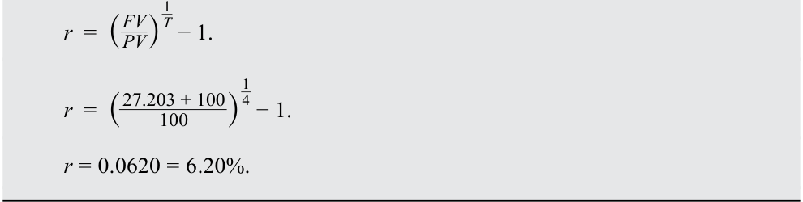
Horizon yield is an investor’s IRR based on the total return (reinvested coupon payments plus sale price or redemption amount) and the purchase price of the bond. The horizon yield on a bond investment is the annualized holding-period rate of return.
Lợi suất theo thời hạn đầu tư (horizon yield) là IRR của một nhà đầu tư dựa trên tổng tỷ suất sinh lợi (các khoản thanh toán coupon được tái đầu tư cộng với giá bán hoặc số tiền hoàn trả) và giá mua của trái phiếu. Lợi suất theo thời hạn đầu tư trên một khoản đầu tư trái phiếu chính là tỷ suất sinh lợi thời kỳ nắm giữ đã được chuẩn hóa theo năm (annualized holding-period rate of return).
In Example 2, Baywhite’s horizon yield is 6.2%, which matches the original yield-to-maturity even though Baywhite did not hold the bond until maturity. This example shows that the realized horizon yield matches the original yield-to-maturity if (1) coupon payments are reinvested at the same interest rate as the original yield-to-maturity and (2) the bond is sold at a price on the constant-yield price
Trong Ví dụ 2, lợi suất theo thời hạn đầu tư của Baywhite là 6,2%, khớp với lợi suất đáo hạn ban đầu mặc dù Baywhite đã không nắm giữ trái phiếu cho đến khi đáo hạn. Ví dụ này cho thấy lợi suất theo thời hạn đầu tư thực hiện khớp với lợi suất đáo hạn ban đầu nếu (1) các khoản thanh toán coupon được tái đầu tư ở cùng mức lãi suất với lợi suất đáo hạn ban đầu và (2) trái phiếu được bán ở một mức giá nằm trên quỹ đạo giá lợi suất không đổi (constant-yield price trajectory),
trajectory, implying there is no capital gain or loss when the bond is sold. Importantly, capital gains (losses) arise if a bond is sold at a price above (below) its constant-yield price trajectory, as shown in a prior lesson.
ngụ ý rằng không có lãi hoặc lỗ vốn khi trái phiếu được bán. Điều quan trọng là, lãi (lỗ) vốn phát sinh nếu một trái phiếu được bán ở mức giá cao hơn (thấp hơn) quỹ đạo giá lợi suất không đổi của nó, như đã chỉ ra trong một bài học trước.
A point on the trajectory represents the carrying value of the bond at that time. The carrying value is the purchase price plus (minus) the amortized amount of the discount (premium) if the bond is purchased at a price below (above) par value. The constant-yield price trajectory for the investors in Example 1 and Example 2 is a flat curve at a price of 100 as the bonds were purchased and sold at par.
Một điểm trên quỹ đạo đại diện cho giá trị ghi sổ (carrying value) của trái phiếu tại thời điểm đó. Giá trị ghi sổ là giá mua cộng (trừ) khoản phân bổ chiết khấu (phần trội) nếu trái phiếu được mua ở mức giá thấp hơn (cao hơn) mệnh giá. Quỹ đạo giá lợi suất không đổi đối với các nhà đầu tư trong Ví dụ 1 và Ví dụ 2 là một đường cong nằm ngang ở mức giá 100 vì các trái phiếu được mua và bán ngang mệnh giá.
We now demonstrate the impact of higher interest rates on VFO and Baywhite by increasing interest rates by 100 basis points (bps) immediately after investment. The yield on the bond increases from 6.20% to 7.20%, and coupon reinvestment rates go up by 100 bps as well.
Bây giờ chúng tôi minh họa tác động của lãi suất cao hơn đối với VFO và Baywhite bằng cách tăng lãi suất thêm 100 điểm cơ bản (bps) ngay sau khi đầu tư. Lợi suất trên trái phiếu tăng từ 6,20% lên 7,20%, và lãi suất tái đầu tư coupon cũng tăng thêm 100 bps.
EXAMPLE 3
VÍ DỤ 3
VFO, the buy-and-hold investor, purchases BRWA’s new 10-year, 6.2% (annual) coupon eurobond at par, and then interest rates immediately increase to 7.20%. The future value of the reinvested coupons at 7.20% for 10 years is
VFO, nhà đầu tư mua và nắm giữ, mua trái phiếu eurobond kỳ hạn 10 năm, trả coupon 6,2% (hàng năm) mới của BRWA ngang mệnh giá, và sau đó lãi suất ngay lập tức tăng lên 7,20%. Giá trị tương lai của các khoản coupon được tái đầu tư ở mức 7,20% trong 10 năm là:
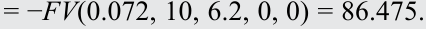
And VFO’s realized rate of return (horizon yield) is 6.43%:
Và tỷ suất sinh lợi thực hiện (lợi suất theo thời hạn đầu tư) của VFO là 6,43%:
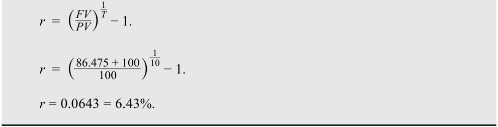
VFO benefits from the higher coupon reinvestment rate. The realized horizon yield is 6.43%, 23 bps higher than the outcome in Example 1, when interest rates were constant. Importantly, VFO does not incur a capital gain or loss because it holds the bond until maturity.
VFO hưởng lợi từ mức lãi suất tái đầu tư coupon cao hơn. Lợi suất theo thời hạn đầu tư thực hiện là 6,43%, cao hơn 23 bps so với kết quả trong Ví dụ 1, khi lãi suất không đổi. Điều quan trọng là, VFO không gánh chịu lãi hay lỗ vốn bởi vì họ nắm giữ trái phiếu cho đến khi đáo hạn.
EXAMPLE 4
VÍ DỤ 4
Baywhite buys the same BRWA eurobond at par, interest rates immediately rise to 7.2%, and it sells the bonds four years later. The future value of the reinvested coupons at 7.2% is
Baywhite mua cùng trái phiếu eurobond của BRWA ngang mệnh giá, lãi suất ngay lập tức tăng lên 7,2%, và họ bán trái phiếu sau đó 4 năm. Giá trị tương lai của các khoản coupon được tái đầu tư ở mức 7,2% là:
= - FV (0.072, 4, 6.2, 0, 0) = 27.609.
= -FV(0.072, 4, 6.2, 0, 0) = 27.609.
We must also calculate the sale price of the bond because the change in interest rates affects the bond’s price and, unlike VFO, Baywhite is selling it before maturity. We calculate the sale price after four years as
Chúng ta cũng phải tính giá bán của trái phiếu bởi vì sự thay đổi của lãi suất ảnh hưởng đến giá của trái phiếu và, không giống như VFO, Baywhite bán nó trước khi đáo hạn. Chúng ta tính giá bán sau 4 năm như sau:
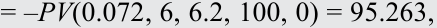
resulting in a realized four-year horizon yield of 5.28%:
dẫn đến lợi suất theo thời hạn đầu tư 4 năm thực hiện là 5,28%:
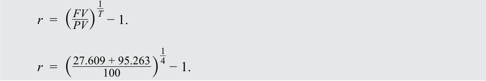
r = 0.0528 = 5.28%.
$r = 0.0528 = 5.28\%$.
While Baywhite also benefits from the higher coupon reinvestment rate, it is more than offset by the capital loss from the sale of the bonds at the higher yield (lower price). Thus, Baywhite’s rate of return is lower than in Example 2, where the interest rate remained at 6.2%.
Mặc dù Baywhite cũng hưởng lợi từ mức lãi suất tái đầu tư coupon cao hơn, nhưng khoản lợi đó bị lấn át hoàn toàn bởi khoản lỗ vốn từ việc bán trái phiếu ở mức lợi suất cao hơn (giá thấp hơn). Do đó, tỷ suất sinh lợi của Baywhite thấp hơn so với trong Ví dụ 2, nơi lãi suất vẫn giữ ở mức 6,2%.
We now examine the rates of return for these two investors if interest rates decline by 100 bps; the yield on the BRWA bonds fall from 6.20% to 5.20% immediately after they are purchased.
Bây giờ chúng ta xem xét tỷ suất sinh lợi cho hai nhà đầu tư này nếu lãi suất giảm 100 bps; lợi suất trên trái phiếu BRWA giảm từ 6,20% xuống 5,20% ngay sau khi chúng được mua.
KNOWLEDGE CHECK
KIỂM TRA KIẾN THỨC (KNOWLEDGE CHECK)
Immediately after VFO, the buy-and-hold investor, purchases BRWA’s 10-year eurobonds at par, interest rates fall to 5.20%.
Ngay sau khi VFO, nhà đầu tư mua và nắm giữ, mua trái phiếu eurobond kỳ hạn 10 năm của BRWA ngang mệnh giá, lãi suất giảm xuống 5,20%.
- Calculate the future value of reinvested coupons. Solution:
- Tính giá trị tương lai của các khoản coupon được tái đầu tư.
The future value of reinvesting the coupon payments at 5.20% for 10 years is = − FV (0.052, 10, 6.2, 0, 0) = 78.715.
Lời giải:
Giá trị tương lai của việc tái đầu tư các khoản thanh toán coupon ở mức 5,20% trong 10 năm là:
= -FV(0.052, 10, 6.2, 0, 0) = 78.715.
- Calculate VFO’s horizon yield (realized rate of return).
- Tính lợi suất theo thời hạn đầu tư (tỷ suất sinh lợi thực hiện) của VFO.
Solution:
Lời giải:
VFO’s horizon yield is 5.98%:
Lợi suất theo thời hạn đầu tư của VFO là 5,98%:
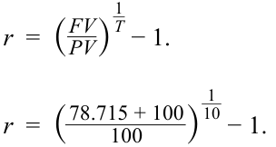
r = 0.0598 = 5.98%.
$r = 0.0598 = 5.98\%$.
- Contrast VFO’s investment outcome in this scenario to Example 1 and Example 3.
- Solution:
- Đối chiếu kết quả đầu tư của VFO trong kịch bản này với Ví dụ 1 và Ví dụ 3.
- Lời giải:
VFO suffers from the lower coupon reinvestment rate. The realized horizon yield of 5.98% is 22 bps lower than the result in Example 1, when interest rates were unchanged, and 45 bps lower than the result in Example 3. There is no capital gain or loss, because the bonds are held until maturity. VFO’s experience indicates that interest rate risk for a buy-and-hold investor arises entirely from reinvestment risk.
VFO chịu thiệt hại từ mức lãi suất tái đầu tư coupon thấp hơn. Lợi suất theo thời hạn đầu tư thực hiện ở mức 5,98% thấp hơn 22 bps so với kết quả trong Ví dụ 1, khi lãi suất không đổi, và thấp hơn 45 bps so với kết quả trong Ví dụ 3. Không có lãi hay lỗ vốn, bởi vì các trái phiếu được nắm giữ cho đến khi đáo hạn. Trải nghiệm của VFO cho thấy rủi ro lãi suất đối với một nhà đầu tư mua và nắm giữ phát sinh hoàn toàn từ rủi ro tái đầu tư.
Baywhite buys BRWA’s 10-year Eurobonds at par, and interest rates fall immediately to 5.20%. Baywhite sells the bonds after four years.
Baywhite mua trái phiếu Eurobond kỳ hạn 10 năm của BRWA ngang mệnh giá, và lãi suất ngay lập tức giảm xuống 5,20%. Baywhite bán trái phiếu sau 4 năm.
- Calculate the future value of the reinvested coupons.
- Tính giá trị tương lai của các khoản coupon được tái đầu tư.
Solution:
Lời giải:
The future of the reinvested coupons is
Giá trị tương lai của các khoản coupon được tái đầu tư là:
= – FV (0.052, 4, 6.2, 0, 0) = 26.802.
= -FV(0.052, 4, 6.2, 0, 0) = 26.802.
- Calculate Baywhite’s horizon yield (realized rate of return). Solution:
- Tính lợi suất theo thời hạn đầu tư (tỷ suất sinh lợi thực hiện) của Baywhite.
The sale price of the bond after four years is
Lời giải:
- = – PV (0.052, 6, 6.2, 100, 0) = 105.043,
Giá bán của trái phiếu sau 4 năm là:
= -PV(0.052, 6, 6.2, 100, 0) = 105.043,
resulting in a realized four-year horizon yield of 7.16%:
dẫn đến lợi suất theo thời hạn đầu tư 4 năm thực hiện là 7,16%:
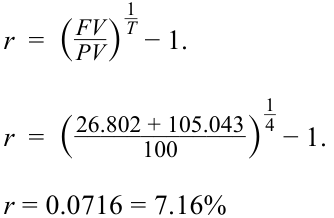
- Contrast Baywhite’s investment outcome in this scenario to Example 2 and Example 4.
- Đối chiếu kết quả đầu tư của Baywhite trong kịch bản này với Ví dụ 2 và Ví dụ 4.
Solution:
Lời giải:
The reduction in the future value of the coupons is more than offset by Baywhite’s capital gain from the sale. Consequently, Baywhite’s horizon yield is higher than in both Example 2 and Example 4.
Sự sụt giảm trong giá trị tương lai của các khoản coupon được bù đắp hơn cả mức đủ bởi khoản lãi vốn của Baywhite từ việc bán trái phiếu. Do đó, lợi suất theo thời hạn đầu tư của Baywhite cao hơn so với cả trong Ví dụ 2 và Ví dụ 4.
As just demonstrated, interest income is the return associated with the passage of time , so it includes the receipt of coupon interest, the reinvestment of those coupons, and the amortization of the discount (or premium) from purchase at a price below (or above) par value to realign the return with the market discount rate. A capital gain or loss is the investor’s return associated with the change in the value of the security, which for a fixed-rate bond arises from a change in the yield-to-maturity (i.e., the implied market discount rate).
Như vừa chứng minh, thu nhập tiền lãi (interest income) là tỷ suất sinh lợi gắn liền với sự trôi qua của thời gian (passage of time), vì vậy nó bao gồm việc nhận tiền lãi coupon, việc tái đầu tư các khoản coupon đó, và việc phân bổ khoản chiết khấu (hoặc phần trội) từ việc mua ở mức giá thấp hơn (hoặc cao hơn) mệnh giá để điều chỉnh lại tỷ suất sinh lợi cho phù hợp với lãi suất chiết khấu thị trường. Lãi hoặc lỗ vốn (capital gain or loss) là tỷ suất sinh lợi của nhà đầu tư gắn liền với sự thay đổi trong giá trị (change in the value) của chứng khoán, mà đối với một trái phiếu lãi suất cố định thì phát sinh từ sự thay đổi trong lợi suất đáo hạn (tức là lãi suất chiết khấu thị trường hàm ý).
This series of examples illustrates an important point about fixed-rate bonds: an investor’s investment horizon is at the heart of understanding interest rate risk and return. There are two offsetting types of interest rate risk that affect the bond investor: reinvestment risk and price risk. The future value of reinvested coupon payments increases when interest rates rise and decreases when rates fall. The sale price on a bond that matures after the horizon date decreases when interest rates rise and increases when rates fall.
Chuỗi các ví dụ này minh họa một điểm quan trọng về trái phiếu lãi suất cố định: thời hạn đầu tư (investment horizon) của nhà đầu tư là trọng tâm của việc thấu hiểu rủi ro lãi suất và tỷ suất sinh lợi. Có hai loại rủi ro lãi suất bù trừ nhau ảnh hưởng đến nhà đầu tư trái phiếu: rủi ro tái đầu tư (reinvestment risk) và rủi ro giá (price risk). Giá trị tương lai của các khoản thanh toán coupon được tái đầu tư tăng lên khi lãi suất tăng và giảm xuống khi lãi suất giảm. Giá bán của một trái phiếu đáo hạn sau ngày kết thúc thời hạn đầu tư giảm xuống khi lãi suất tăng và tăng lên khi lãi suất giảm.
Reinvestment risk matters more when the investor has a long-term investment horizon. A buy-and-hold investor only has reinvestment risk. Price risk matters more when the investor has a short-term investment horizon. An investor who sells before the first coupon is received has only price risk. Thus, two investors holding the same bond can have different exposures to interest rate risk if they have different investment horizons.
Rủi ro tái đầu tư có ý nghĩa quan trọng hơn khi nhà đầu tư có thời hạn đầu tư dài hạn. Một nhà đầu tư mua và nắm giữ chỉ có rủi ro tái đầu tư. Rủi ro giá có ý nghĩa quan trọng hơn khi nhà đầu tư có thời hạn đầu tư ngắn hạn. Một nhà đầu tư bán trước khi nhận được khoản coupon đầu tiên chỉ có rủi ro giá. Như vậy, hai nhà đầu tư nắm giữ cùng một trái phiếu có thể có mức độ phơi nhiễm với rủi ro lãi suất khác nhau nếu họ có thời hạn đầu tư khác nhau.
QUESTION SET
BỘ CÂU HỎI (QUESTION SET)
- Fill in the blanks using the two words below:
- Điền vào chỗ trống bằng cách sử dụng hai cụm từ dưới đây:
Reinvestment risk
Rủi ro tái đầu tư (Reinvestment risk)
Price risk
Rủi ro giá (Price risk)
An investor who has a long-term investment horizon is more concerned about ___, while the investor with a short-term investment horizon is more concerned about ____.
Một nhà đầu tư có thời hạn đầu tư dài hạn sẽ quan tâm nhiều hơn đến ___, trong khi nhà đầu tư có thời hạn đầu tư ngắn hạn sẽ quan tâm nhiều hơn đến ____.
Solution:
Lời giải:
An investor who has a long-term investment horizon is more concerned about reinvestment risk, while the investor with a short-term investment horizon is more concerned about price risk.
Một nhà đầu tư có thời hạn đầu tư dài hạn sẽ quan tâm nhiều hơn đến rủi ro tái đầu tư (reinvestment risk), trong khi nhà đầu tư có thời hạn đầu tư ngắn hạn sẽ quan tâm nhiều hơn đến rủi ro giá (price risk).
- What is the carrying value of a bond?
- Giá trị ghi sổ (carrying value) của một trái phiếu là gì?
Solution:
Lời giải:
The carrying value of a bond is the total value of the price at which the bond was purchased plus (minus) the adjustment for amortization of the discount (premium) if the bond is purchased at a price below (above) par value.
Giá trị ghi sổ của một trái phiếu là tổng giá trị của mức giá mà tại đó trái phiếu đã được mua cộng (trừ) khoản điều chỉnh cho việc phân bổ chiết khấu (phần trội) nếu trái phiếu được mua ở mức giá thấp hơn (cao hơn) mệnh giá.
- Match the following
- Ghép nối các nội dung sau
| Future value of coupons | Interest rates |
|---|---|
| A. Increase | Decrease |
| B. Decrease | Increase |
| Giá trị tương lai của các khoản coupon (Future value of coupons) | Lãi suất (Interest rates) |
|---|---|
| A. Tăng (Increase) | Giảm (Decrease) |
| B. Giảm (Decrease) | Tăng (Increase) |
Solution:
Lời giải:
The answer to A is increase. The future value of coupons has a direct relationship with interest rates. Rising interest rates mean coupons are reinvested at a higher rate, increasing their future value.
Đáp án cho A là tăng (increase). Giá trị tương lai của các khoản coupon có mối quan hệ thuận chiều với lãi suất. Lãi suất tăng có nghĩa là các khoản coupon được tái đầu tư ở mức lãi suất cao hơn, làm tăng giá trị tương lai của chúng.
The answer to B is decrease. The future value of coupons has a direct relationship with interest rates. Falling interest rates mean coupons are reinvested at a lower rate, decreasing their future value.
- An investor purchases a five-year, 5.6% (annual) coupon priced at par (settlement: 15 December 2031; maturity: 15 December 2036) and sells it after two years. Immediately after the purchase of the bond, interest rates rise to 5.9%. The investor’s total return at the end of two years is closest to:
-
A. 5.23%.
-
B. 5.60%.
Đáp án cho B là giảm (decrease). Giá trị tương lai của các khoản coupon có mối quan hệ thuận chiều với lãi suất. Lãi suất giảm có nghĩa là các khoản coupon được tái đầu tư ở mức lãi suất thấp hơn, làm giảm giá trị tương lai của chúng.
C. 5.75%.
- Một nhà đầu tư mua một trái phiếu kỳ hạn 5 năm, trả coupon 5,6% (hàng năm) được định giá ngang mệnh giá (ngày thanh toán: 15 tháng 12 năm 2031; ngày đáo hạn: 15 tháng 12 năm 2036) và bán nó sau 2 năm. Ngay sau khi mua trái phiếu, lãi suất tăng lên 5,9%. Tổng tỷ suất sinh lợi của nhà đầu tư vào cuối năm thứ hai gần nhất với mức:
-
A. 5,23%.
-
B. 5,60%.
-
C. 5,75%.
Solution:
Lời giải:
A is correct. The investor’s total return is composed of the (1) coupons, (2) reinvestment of coupons, and (3) gain/loss on sale prior to maturity. The future value of the coupons assuming reinvestment at 5.90% is
A là đáp án đúng. Tổng tỷ suất sinh lợi của nhà đầu tư bao gồm (1) các khoản coupon, (2) tái đầu tư các khoản coupon, và (3) lãi/lỗ khi bán trước khi đáo hạn. Giá trị tương lai của các khoản coupon giả định tái đầu tư ở mức 5,90% là:
- = – FV (0.059, 2, 5.6, 0, 0) = 11.5304.
= -FV(0.059, 2, 5.6, 0, 0) = 11.5304.
The sale price of the bond after two years, when three years remain to maturity, is
Giá bán của trái phiếu sau 2 năm, khi còn 3 năm nữa là đáo hạn, là:
- = – PV (0.059, 3, 5.6, 100, 0) = 99.1966.
= -PV(0.059, 3, 5.6, 100, 0) = 99.1966.
The realized rate of return is 5.23%:
Tỷ suất sinh lợi thực hiện là 5,23%:
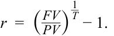
1 ____________ 2 − 1. _r = (11.530 + 99.197 100 ) r = 0.0523 = 5.23%. B is incorrect because it is the rate of return if interest rates remain at 5.60%. C is incorrect because it is the average of the two rates (i.e., the coupon rate, 5.6%, and the new, higher interest rate, 5.9%).
B không đúng bởi vì đó là tỷ suất sinh lợi nếu lãi suất vẫn giữ ở mức 5,60%.
C không đúng bởi vì đó là trung bình cộng của hai mức lãi suất (tức là lãi suất coupon 5,6% và mức lãi suất mới cao hơn là 5,9%).
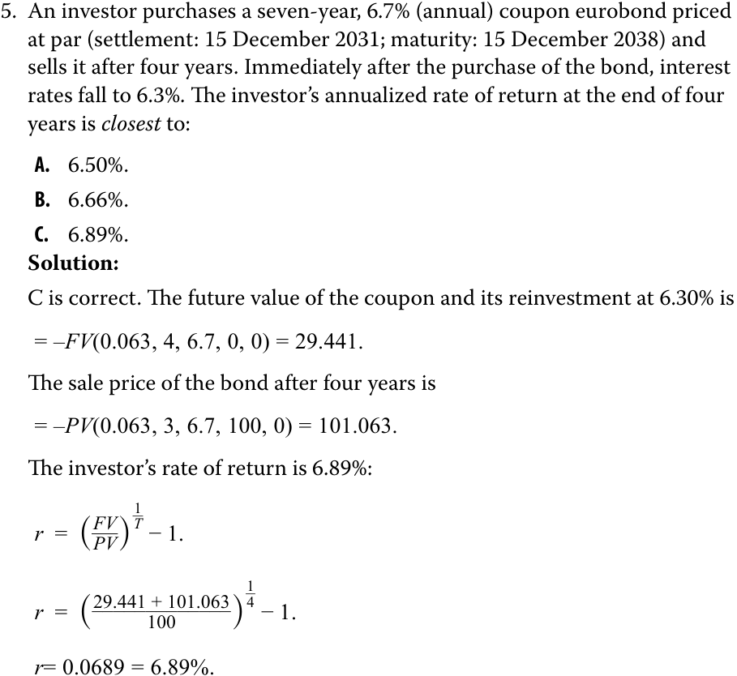
A is incorrect because this is the average of the annual coupon rate and the prevailing interest rate.
- Một nhà đầu tư mua một trái phiếu eurobond kỳ hạn 7 năm, trả coupon 6,7% (hàng năm) được định giá ngang mệnh giá (ngày thanh toán: 15 tháng 12 năm 2031; ngày đáo hạn: 15 tháng 12 năm 2038) và bán nó sau 4 năm. Ngay sau khi mua trái phiếu, lãi suất giảm xuống 6,3%. Tỷ suất sinh lợi chuẩn hóa theo năm của nhà đầu tư vào cuối năm thứ tư gần nhất với mức: - A. 6,50%. - B. 6,66%. - C. 6,89%.
Lời giải:
C là đáp án đúng. Giá trị tương lai của khoản coupon và việc tái đầu tư nó ở mức 6,30% là:
= -FV(0.063, 4, 6.7, 0, 0) = 29.441.
Giá bán của trái phiếu sau 4 năm là:
= -PV(0.063, 3, 6.7, 100, 0) = 101.063.
B is incorrect because this calculation does not account for the appreciation in the bond price after interest rates fall.
Tỷ suất sinh lợi của nhà đầu tư là 6,89%:
A không đúng bởi vì đây là trung bình cộng của lãi suất coupon hàng năm và lãi suất hiện hành.
B không đúng bởi vì phép tính này không tính đến sự tăng giá của trái phiếu sau khi lãi suất giảm.
INVESTMENT HORIZON AND INTEREST RATE RISK 3
THỜI HẠN ĐẦU TƯ VÀ RỦI RO LÃI SUẤT (INVESTMENT HORIZON AND INTEREST RATE RISK) 3
describe the relationships among a bond’s holding period return, its Macaulay duration, and the investment horizon; define, calculate, and interpret Macaulay duration.
mô tả mối quan hệ giữa tỷ suất sinh lợi thời kỳ nắm giữ của một trái phiếu, thời lượng Macaulay của nó, và thời hạn đầu tư; định nghĩa, tính toán và diễn giải thời lượng Macaulay.
We now extend the prior discussion by introducing a third investor in BRWA’s 10-year, 6.2% annual eurobonds: Hightest Capital, which has an 8-year time horizon. If interest rates remain at 6.20%, the future value of reinvested coupon interest is
Bây giờ chúng ta mở rộng cuộc thảo luận trước đó bằng cách giới thiệu một nhà đầu tư thứ ba vào trái phiếu eurobond kỳ hạn 10 năm, trả lãi hàng năm 6,2% của BRWA: Hightest Capital, có thời hạn đầu tư là 8 năm. Nếu lãi suất vẫn giữ ở mức 6,20%, giá trị tương lai của tiền lãi coupon được tái đầu tư là:
= –FV(0.062, 8, 6.2, 0, 0) = 61.807.
= -FV(0.062, 8, 6.2, 0, 0) = 61.807.
When the bond is sold, it has two years remaining to maturity. Assuming yield-to-maturity remains at 6.2% and the sale price is 100, Hightest’s horizon yield (realized rate of return) is 6.20%:
Khi trái phiếu được bán, nó còn 2 năm nữa là đáo hạn. Giả sử lợi suất đáo hạn vẫn giữ ở mức 6,2% và giá bán là 100, lợi suất theo thời hạn đầu tư (tỷ suất sinh lợi thực hiện) của Hightest là 6,20%:
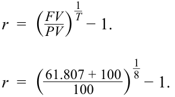
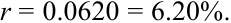
If interest rates immediately rose to 7.20% after the purchase, the future value of coupons would increase:
Nếu lãi suất ngay lập tức tăng lên 7,20% sau khi mua, giá trị tương lai của các khoản coupon sẽ tăng lên:
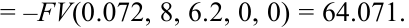
And the price of the bond at the time of sale would fall:
Và giá của trái phiếu tại thời điểm bán sẽ giảm xuống:
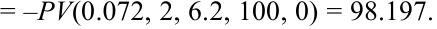
Hightest’s realized eight-year horizon yield is now 6.24%:
Lợi suất theo thời hạn đầu tư 8 năm thực hiện của Hightest hiện là 6,24%:
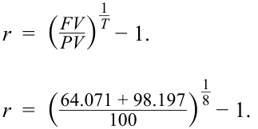
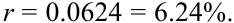
Notice that the capital loss from the bond sale of 1.803 (= 98.197 – 100.00) is roughly matched by the additional coupon reinvestment income of 2.265 from the increase in interest rates. Therefore, Hightest’s total return is nearly the same as in the stable rate scenario (6.24%, compared with 6.20%).
Hãy chú ý rằng khoản lỗ vốn từ việc bán trái phiếu là 1,803 ($= 98.197 - 100.00$) gần như được cân bằng bởi khoản thu nhập tái đầu tư coupon bổ sung là 2,265 từ việc tăng lãi suất. Do đó, tổng tỷ suất sinh lợi của Hightest gần như giống hệt với trong kịch bản lãi suất ổn định (6,24%, so với 6,20%).
Now assume instead that market interest rates fall by 100 bps, to 5.20%. The future value of coupons decreases while the price of the bond at the time of sale increases: = – FV (0.052, 8, 6.2, 0, 0) = 59.630.
Bây giờ giả sử ngược lại rằng lãi suất thị trường giảm 100 bps, xuống còn 5,20%. Giá trị tương lai của các khoản coupon giảm xuống trong khi giá của trái phiếu tại thời điểm bán tăng lên:
= -FV(0.052, 8, 6.2, 0, 0) = 59.630.
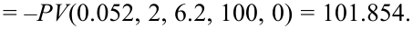
Hightest’s realized eight-year horizon yield is now 6.17%:
Lợi suất theo thời hạn đầu tư 8 năm thực hiện của Hightest hiện là 6,17%:
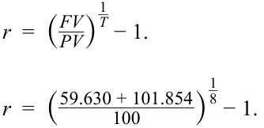
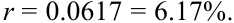
Notice that the capital gain from the bond sale of 1.854 is roughly matched by the decrease in coupon reinvestment income. Again, Hightest’s total return is nearly the same as in the stable rate scenario (6.17%, compared to 6.20%).
Hãy chú ý rằng khoản lãi vốn từ việc bán trái phiếu là 1,854 gần như được cân bằng bởi sự sụt giảm trong thu nhập tái đầu tư coupon. Một lần nữa, tổng tỷ suất sinh lợi của Hightest gần như giống hệt với trong kịch bản lãi suất ổn định (6,17%, so với 6,20%).
Hightest’s investment results, along with those of VFO and Baywhite, are summarized in Exhibit 1. They reveal an important outcome for Hightest with the eight-year horizon: Total returns and horizon yields are nearly the same regardless of interest rates .
Kết quả đầu tư của Hightest, cùng với kết quả của VFO và Baywhite, được tóm tắt trong Bảng 1. Chúng cho thấy một kết quả quan trọng đối với Hightest có thời hạn đầu tư 8 năm: Tổng tỷ suất sinh lợi và lợi suất theo thời hạn đầu tư gần như giống nhau bất kể lãi suất thay đổi như thế nào.
Exhibit 1
Bảng 1 (Exhibit 1)
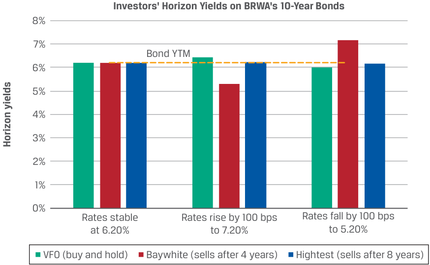
Chú thích hình ảnh: - Tiêu đề: Lợi suất theo thời hạn đầu tư của các nhà đầu tư trên Trái phiếu kỳ hạn 10 năm của BRWA (Investors' Horizon Yields on BRWA's 10-Year Bonds) - Trục tung: Lợi suất theo thời hạn đầu tư (Horizon yields) (%) (từ 0% đến 8%), đường nét đứt tại YTM của trái phiếu (Bond YTM) = 6,20% - Trục hoành (3 kịch bản): Lãi suất ổn định ở mức 6,20% (Rates stable at 6.20%), Lãi suất tăng 100 bps lên 7,20% (Rates rise by 100 bps to 7.20%), Lãi suất giảm 100 bps xuống 5,20% (Rates fall by 100 bps to 5.20%) - Các nhóm cột: VFO (mua và nắm giữ), Baywhite (bán sau 4 năm), Hightest (bán sau 8 năm)
Hightest’s investment horizon of eight years was chosen to illustrate an important quantity for the BRWA bond and fixed-income instruments generally: Macaulay duration , a holding period for a bond that balances coupon reinvestment gain (loss) and price loss (gain) for a one-time instantaneous “parallel” shift in the yield curve once the bond purchase is settled. It is named after Frederick Macaulay, the Canadian economist who introduced the concept in 1938. Given the result for Hightest, we know that the Macaulay duration of this BRWA bond is close to eight years.
Thời hạn đầu tư 8 năm của Hightest đã được chọn để minh họa một đại lượng quan trọng đối với trái phiếu BRWA và các công cụ thu nhập cố định nói chung: thời lượng Macaulay (Macaulay duration), một thời kỳ nắm giữ đối với một trái phiếu giúp cân bằng giữa khoản lãi (lỗ) tái đầu tư coupon và khoản lỗ (lãi) về giá trước một sự dịch chuyển “song song” tức thời một lần duy nhất (one-time instantaneous “parallel” shift) trong đường cong lợi suất ngay sau khi giao dịch mua trái phiếu được thanh toán. Đại lượng này được đặt theo tên của Frederick Macaulay, nhà kinh tế học người Canada đã giới thiệu khái niệm này vào năm 1938. Dựa trên kết quả của Hightest, chúng ta biết rằng thời lượng Macaulay của trái phiếu BRWA này gần bằng 8 năm.
Exhibit 2 illustrates Macaulay duration for a bond initially priced at par value.
Bảng 2 minh họa thời lượng Macaulay cho một trái phiếu ban đầu được định giá ngang mệnh giá.
Exhibit 2: Interest Rate Risk, Macaulay Duration, and Investment Horizon
Bảng 2: Rủi ro Lãi suất, Thời lượng Macaulay và Thời hạn Đầu tư (Exhibit 2: Interest Rate Risk, Macaulay Duration, and Investment Horizon)
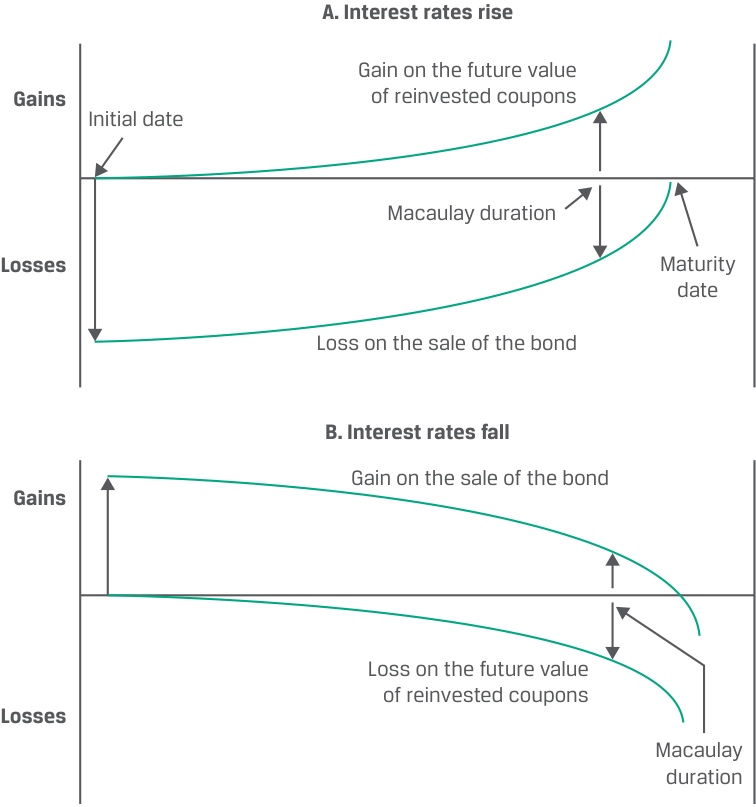
Chú thích hình ảnh: - Hình A. Lãi suất tăng (Interest rates rise): Khoản lãi trên giá trị tương lai của các khoản coupon tái đầu tư (Gain on the future value of reinvested coupons) tăng dần theo thời gian; Khoản lỗ khi bán trái phiếu (Loss on the sale of the bond) giảm dần về 0 tại ngày đáo hạn (Maturity date). Tại điểm Thời lượng Macaulay (Macaulay duration), hai hiệu ứng lãi và lỗ cân bằng nhau. - Hình B. Lãi suất giảm (Interest rates fall): Khoản lãi khi bán trái phiếu (Gain on the sale of the bond) giảm dần về 0 tại ngày đáo hạn; Khoản lỗ trên giá trị tương lai của các khoản coupon tái đầu tư (Loss on the future value of reinvested coupons) tăng dần theo thời gian. Tại điểm Thời lượng Macaulay (Macaulay duration), hai hiệu ứng lãi và lỗ cân bằng nhau.
As shown in Panel A, when interest rates rise, there is an immediate drop in price. Then, as time passes, the bond price is “pulled to par.” The increase in the future value of reinvested coupons starts small but builds over time, and the curve indicates the added future value of reinvested coupons due to the higher interest rate. At the Macaulay duration, the two effects offset each other: the gain on reinvested coupons is equal to the loss from the increase in interest rates.
Như được hiển thị trong Hình A, khi lãi suất tăng, giá ngay lập tức sụt giảm. Sau đó, khi thời gian trôi qua, giá trái phiếu được “kéo về mệnh giá” (“pulled to par”). Sự gia tăng trong giá trị tương lai của các khoản coupon được tái đầu tư bắt đầu ở mức nhỏ nhưng tích lũy dần theo thời gian, và đường cong cho biết giá trị tương lai tăng thêm của các khoản coupon được tái đầu tư nhờ mức lãi suất cao hơn. Tại thời lượng Macaulay, hai hiệu ứng này bù trừ lẫn nhau: khoản lãi trên các khoản coupon được tái đầu tư bằng với khoản lỗ từ việc tăng lãi suất.
The same pattern is shown in Panel B, when interest rates fall. There is an immediate increase in price, but then the “pull-to-par” effect brings the price down as time passes. The impact from reinvesting at a lower rate starts small but becomes significant over time. Again, the Macaulay duration indicates the point when the two effects offset each other, so the gain from the decrease in interest rates equally offsets the loss from coupon reinvestment at lower rates.
Mô hình tương tự được hiển thị trong Hình B, khi lãi suất giảm. Giá ngay lập tức tăng lên, nhưng sau đó hiệu ứng “kéo về mệnh giá” sẽ đưa mức giá giảm dần xuống khi thời gian trôi qua. Tác động từ việc tái đầu tư ở mức lãi suất thấp hơn bắt đầu ở mức nhỏ nhưng trở nên đáng kể theo thời gian. Một lần nữa, thời lượng Macaulay chỉ ra thời điểm khi hai hiệu ứng bù trừ lẫn nhau, vì vậy khoản lãi từ việc giảm lãi suất bù trừ tương đương với khoản lỗ từ việc tái đầu tư coupon ở mức lãi suất thấp hơn.
The foregoing discussion allows for statements about the general relationships among interest rate risk, the Macaulay duration, and the investment horizon shown in Exhibit 3:
Cuộc thảo luận vừa rồi cho phép đưa ra các phát biểu về mối quan hệ tổng quát giữa rủi ro lãi suất, thời lượng Macaulay, và thời hạn đầu tư được hiển thị trong Bảng 3:
Exhibit 3: Macaulay Duration, Investment Horizon, and Interest Rate Risk
| Dominant Risk | Source of Interest Rate Risk |
|
|---|---|---|
| Investment Horizon > Macaulay | Reinvestment Risk | Falling Interest Rates |
| Duration | ||
| Investment Horizon = Macaulay | Price Risk = Reinvestment | — |
| Duration | Risk | |
| Investment Horizon < Macaulay | Price Risk | Rising Interest Rates |
| Duration |
Bảng 3: Thời lượng Macaulay, Thời hạn Đầu tư và Rủi ro Lãi suất (Exhibit 3: Macaulay Duration, Investment Horizon, and Interest Rate Risk)
The Macaulay duration of the BRWA bond is 7.7429 years (the calculation will be demonstrated in the next lesson). So, Statement 1 reflects VFO’s situation with its 10-year horizon; Statement 2, Hightest, the investor with the 8-year horizon; and Statement 3, Baywhite, the investor with the 4-year horizon.
| Mối quan hệ | Rủi ro chi phối (Dominant Risk) | Nguồn rủi ro lãi suất (Source of Interest Rate Risk) |
|---|---|---|
| Thời hạn đầu tư > Thời lượng Macaulay (Investment Horizon > Macaulay Duration) | Rủi ro tái đầu tư (Reinvestment Risk) | Lãi suất giảm (Falling Interest Rates) |
| Thời hạn đầu tư = Thời lượng Macaulay (Investment Horizon = Macaulay Duration) | Rủi ro giá = Rủi ro tái đầu tư (Price Risk = Reinvestment Risk) | — |
| Thời hạn đầu tư < Thời lượng Macaulay (Investment Horizon < Macaulay Duration) | Rủi ro giá (Price Risk) | Lãi suất tăng (Rising Interest Rates) |
As shown in Equation 1, the duration gap for a bond is the difference between its Macaulay duration and the investor’s investment horizon.
Thời lượng Macaulay của trái phiếu BRWA là 7,7429 năm (phép tính sẽ được trình bày trong bài học tiếp theo). Vì vậy, Phát biểu 1 phản ánh tình huống của VFO với thời hạn đầu tư 10 năm; Phát biểu 2 phản ánh Hightest, nhà đầu tư có thời hạn đầu tư 8 năm; và Phát biểu 3 phản ánh Baywhite, nhà đầu tư có thời hạn đầu tư 4 năm.
Duration gap = Macaulay duration – Investment horizon.
~~(1)~~
Như được hiển thị trong Phương trình 1, chênh lệch thời lượng (duration gap) của một trái phiếu là hiệu số giữa thời lượng Macaulay của nó và thời hạn đầu tư của nhà đầu tư.
VFO, with a 10-year horizon, has a negative duration gap. Therefore, the primary risk it faces is lower interest rates. Hightest, with the eight-year horizon, has a duration gap of approximately zero, so it is nearly hedged against interest rate risk. Baywhite, with the four-year horizon, has a positive duration gap and is at risk of higher rates. Importantly, as time passes, the investment horizon is reduced and the Macaulay duration of the bond also falls.
KNOWLEDGE CHECK
Three investors, Rook Point Investors, Fyleton Investments, and Amy Investments, purchase a 5.61%, 30-year Romanian eurobond at par value. The bond’s Macaulay duration is 15.16 years. Rook Point’s investment horizon is five years, while Fyleton and Amy have investment horizons of 15 and 30 years, respectively.
VFO, với thời hạn đầu tư 10 năm, có chênh lệch thời lượng âm (negative duration gap). Do đó, rủi ro chính mà họ phải đối mặt là lãi suất thấp hơn. Hightest, với thời hạn đầu tư 8 năm, có chênh lệch thời lượng xấp xỉ bằng không, vì vậy họ gần như được phòng vệ trước rủi ro lãi suất. Baywhite, với thời hạn đầu tư 4 năm, có chênh lệch thời lượng dương (positive duration gap) và chịu rủi ro lãi suất cao hơn. Điều quan trọng là, khi thời gian trôi qua, thời hạn đầu tư sẽ giảm đi và thời lượng Macaulay của trái phiếu cũng giảm xuống.
- Calculate the returns for the three investors for three scenarios:
KIỂM TRA KIẾN THỨC (KNOWLEDGE CHECK)
Scenario 1: Interest rates fall by 50 bps immediately after the purchase.
Scenario 2: Interest rates stay stable at 5.61%.
Ba nhà đầu tư, Rook Point Investors, Fyleton Investments, và Amy Investments, mua một trái phiếu eurobond của Romania kỳ hạn 30 năm, lãi suất 5,61% ngang mệnh giá. Thời lượng Macaulay của trái phiếu là 15,16 năm. Thời hạn đầu tư của Rook Point là 5 năm, trong khi Fyleton và Amy có thời hạn đầu tư lần lượt là 15 năm và 30 năm.
Scenario 3: Interest rates rise by 50 bps immediately after the purchase.
Solution:
- Tính tỷ suất sinh lợi cho ba nhà đầu tư trong ba kịch bản:
- Kịch bản 1: Lãi suất giảm 50 bps ngay sau khi mua.
- Kịch bản 2: Lãi suất giữ ổn định ở mức 5,61%.
- Kịch bản 3: Lãi suất tăng 50 bps ngay sau khi mua.
The total returns under the various scenarios for each investor are shown in the table below.
Lời giải:
The key point to note is that when an investor’s investment horizon is
Tổng tỷ suất sinh lợi theo các kịch bản khác nhau cho mỗi nhà đầu tư được hiển thị trong bảng dưới đây.
almost equal to the bond’s Macaulay duration, the returns under various interest rate scenarios remain the same. The gain (loss) from coupon reinvestment risk is offset by the loss (gain) from the price risk.
| Rates Stable at 5.61% | Rates Rise to 6.11% | Rates Fall to 5.11% |
|---|---|---|
| Rook Point Fyleton Amy |
Rook Point Fyleton Amy |
Rook Point Fyleton Amy |
| Investment Horizon | Investment Horizon | Investment Horizon |
Điểm mấu chốt cần lưu ý là khi thời hạn đầu tư của một nhà đầu tư gần bằng với thời lượng Macaulay của trái phiếu, tỷ suất sinh lợi theo các kịch bản lãi suất khác nhau vẫn giữ nguyên như nhau. Khoản lãi (lỗ) từ rủi ro tái đầu tư coupon được bù trừ bởi khoản lỗ (lãi) từ rủi ro giá.
| Rates Stable | at 5.61% | Ra | tes Rise to 6.1 | 1% | Ra | tes Fall to 5.1 | 1% | |
|---|---|---|---|---|---|---|---|---|
| 5 | 15 | 30 | 5 | 15 | 30 | 5 | 15 | 30 |
| MacDur > Horizon |
MacDur≅ Horizon |
MacDur < Horizon |
MacDur > Horizon |
MacDur≅ Horizon |
MacDur < Horizon |
MacDur > Horizon |
MacDur≅ Horizon |
MacDur < Horizon |
| Futur | e Value of Cou | pons | Futu | re Value of Cou | pons | Futur | e Value of Cou | pons |
| 31.379 | 126.765 | 414.223 | 31.694 | 131.678 | 452.199 | 31.067 | 122.063 | 379.840 |
| Redemp | tion Value or S | ale Price | Redemp | tion Value or S | ale Price | Redemp | tion Value or S | ale Price |
| 100.000 | 100.000 | 100.000 | 93.675 | 95.179 | 100.000 | 106.970 | 105.152 | 100.000 |
| Horizon Yield | Horizon Yield | Horizon Yield | ||||||
| 5.610% | 5.610% | 5.610% | 4.626% | 5.613% | 5.861% | 6.659% | 5.624% | 5.367% |
| Chỉ tiêu | Lãi suất ổn định ở 5,61% — Rook Point | Lãi suất ổn định ở 5,61% — Fyleton | Lãi suất ổn định ở 5,61% — Amy | Lãi suất tăng lên 6,11% — Rook Point | Lãi suất tăng lên 6,11% — Fyleton | Lãi suất tăng lên 6,11% — Amy | Lãi suất giảm xuống 5,11% — Rook Point | Lãi suất giảm xuống 5,11% — Fyleton | Lãi suất giảm xuống 5,11% — Amy |
|---|---|---|---|---|---|---|---|---|---|
| Thời hạn đầu tư (Investment Horizon) | 5 | 15 | 30 | 5 | 15 | 30 | 5 | 15 | 30 |
| So sánh MacDur | MacDur > Horizon | MacDur $\cong$ Horizon | MacDur < Horizon | MacDur > Horizon | MacDur $\cong$ Horizon | MacDur < Horizon | MacDur > Horizon | MacDur $\cong$ Horizon | MacDur < Horizon |
| Giá trị tương lai của Coupon (Future Value of Coupons) | 31,379 | 126,765 | 414,223 | 31,694 | 131,678 | 452,199 | 31,067 | 122,063 | 379,840 |
| Giá trị hoàn trả hoặc Giá bán (Redemption Value or Sale Price) | 100,000 | 100,000 | 100,000 | 93,675 | 95,179 | 100,000 | 106,970 | 105,152 | 100,000 |
| Lợi suất theo thời hạn đầu tư (Horizon Yield) | 5,610% | 5,610% | 5,610% | 4,626% | 5,613% | 5,861% | 6,659% | 5,624% | 5,367% |
QUESTION SET
BỘ CÂU HỎI (QUESTION SET)
- Match the following:
- Ghép nối các nội dung sau:
| Duration Gap | Risk Source |
|---|---|
| A. Negative | Rising interest rates |
| B. Positive | Falling interest rates |
| Chênh lệch thời lượng (Duration Gap) | Nguồn rủi ro (Risk Source) |
|---|---|
| A. Âm (Negative) | Lãi suất tăng (Rising interest rates) |
| B. Dương (Positive) | Lãi suất giảm (Falling interest rates) |
Solution:
Lời giải:
The answer to A is falling interest rates. A negative duration gap means that the bond’s Macaulay duration is lower than the investor’s investment horizon, which means that reinvestment risk is the dominant source of interest rate risk, from falling interest rates.
The answer to B is rising interest rates. A positive duration gap means that the bond’s Macaulay duration is higher than the investor’s investment horizon, which means that price risk is the dominant source of interest rate risk, from rising interest rates.
Đáp án cho A là lãi suất giảm (falling interest rates). Chênh lệch thời lượng âm có nghĩa là thời lượng Macaulay của trái phiếu thấp hơn thời hạn đầu tư của nhà đầu tư, điều này có nghĩa là rủi ro tái đầu tư là nguồn rủi ro lãi suất chi phối, xuất phát từ việc lãi suất giảm.
- Complete the equation below with the following terms:
Macaulay duration
Đáp án cho B là lãi suất tăng (rising interest rates). Chênh lệch thời lượng dương có nghĩa là thời lượng Macaulay của trái phiếu cao hơn thời hạn đầu tư của nhà đầu tư, điều này có nghĩa là rủi ro giá là nguồn rủi ro lãi suất chi phối, xuất phát từ việc lãi suất tăng.
Investment horizon
- Hoàn thành phương trình bên dưới với các thuật ngữ sau:
- Thời lượng Macaulay (Macaulay duration)
- Thời hạn đầu tư (Investment horizon)
- Thời gian đáo hạn (Time-to-maturity)
Time-to-maturity
Duration gap = _ – _.
Chênh lệch thời lượng (Duration gap) = _ – _.
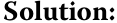
Duration gap = Macaulay duration – Investment horizon.
Lời giải:
Chênh lệch thời lượng (Duration gap) = Thời lượng Macaulay (Macaulay duration) – Thời hạn đầu tư (Investment horizon).
- An investor intends to hold a bond with eight years remaining to maturity for eight years. The bond’s Macaulay duration is 6.841. The investor is primarily exposed to which of the following interest rate risks:
-
A. Price risk
-
B. Reinvestment risk
- Một nhà đầu tư dự định nắm giữ một trái phiếu còn 8 năm nữa là đáo hạn trong vòng 8 năm. Thời lượng Macaulay của trái phiếu là 6,841. Nhà đầu tư này chủ yếu chịu rủi ro lãi suất nào sau đây:
-
A. Rủi ro giá (Price risk)
-
B. Rủi ro tái đầu tư (Reinvestment risk)